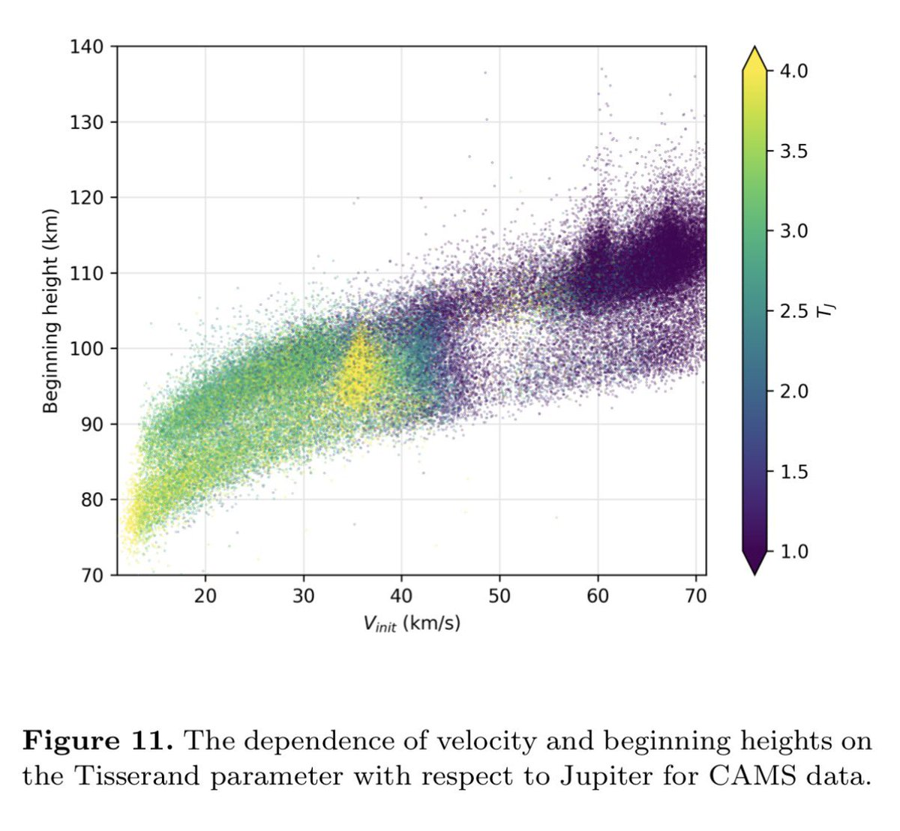
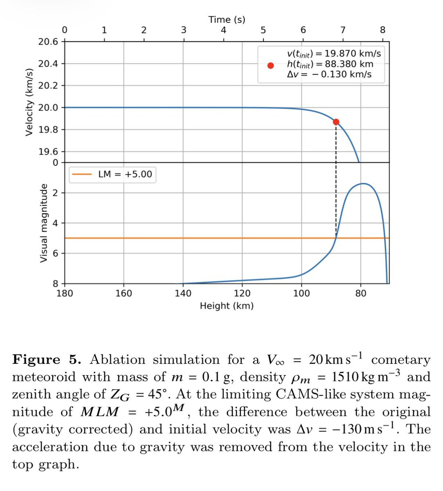

Rain Antares🏳️⚧️🍥
@Rain_Antar1121
喵呜喵呜咱去找找视频🥰不过英仙座流星雨母体109P是高倾角逆行的嘛，流星体特征速度中等偏高，大概是59km/s，如图一视星等5等起算的开始发光高度都有110km啦，这个高度气球难飞到卫星下不去…幻想有点要夭折了）🥹然后如图二即使是20km/s的极低速流星，从90km开始亮过5等，也撑不过70km；那么到90km的时候典型英仙座流星肯定已经烧完了
找了个论文里两个好看的图嗯
引自https://t.co/KKfjGj1yfn
不知不觉啃了两个小时忘记自己要表达什么了…只是觉得好好玩要整理给姐姐看…开心(*⌒∇⌒*)


水母雨🍥
@ena1_mizuki
@Rain_Antar1121 窝是躺在躺椅上，盯飞马座然后用余光扫视整片天空的，嘛按理来讲各个方向应该是差不多的，总之选光害较低的方向，剩下就交给玄学好了~
流星发光一般是在90-60km，我记得之前看文献的时候见过太空视角看狮子座流星雨，好像是在国际空间站拍的？感觉好酷